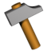
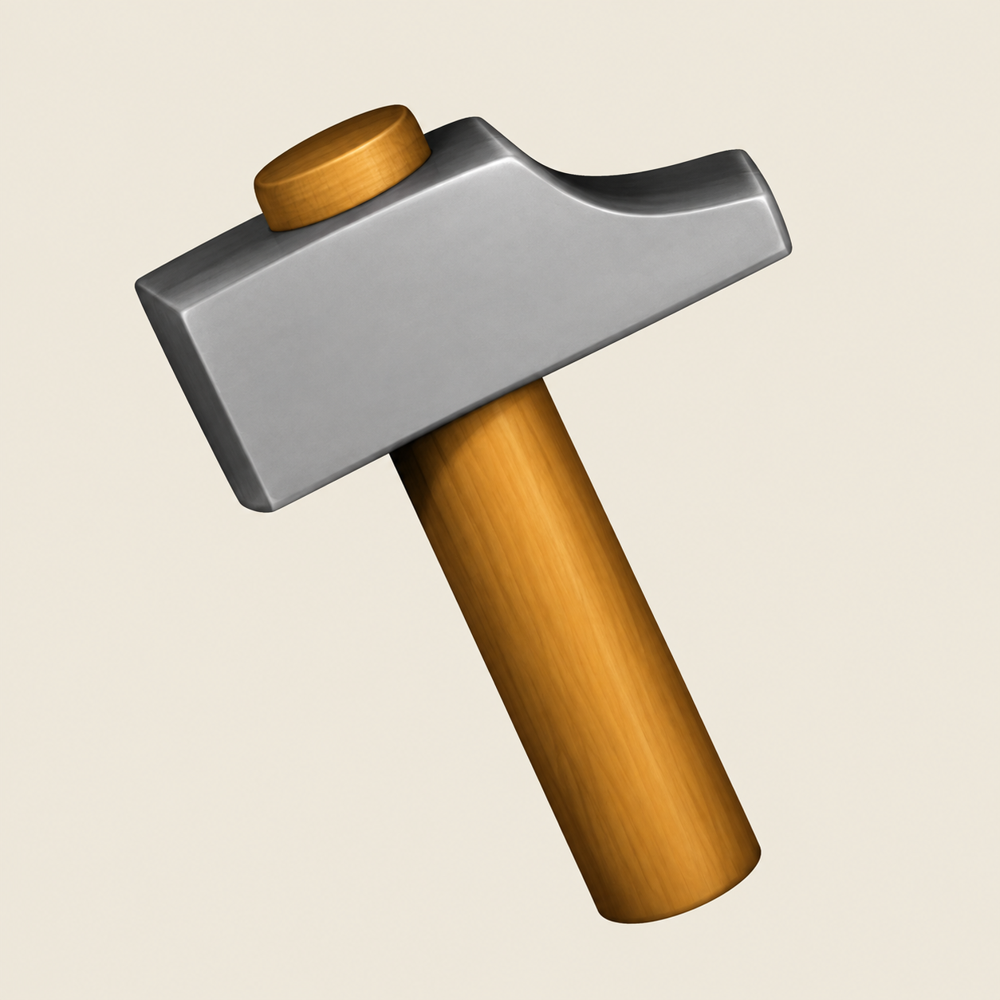
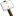
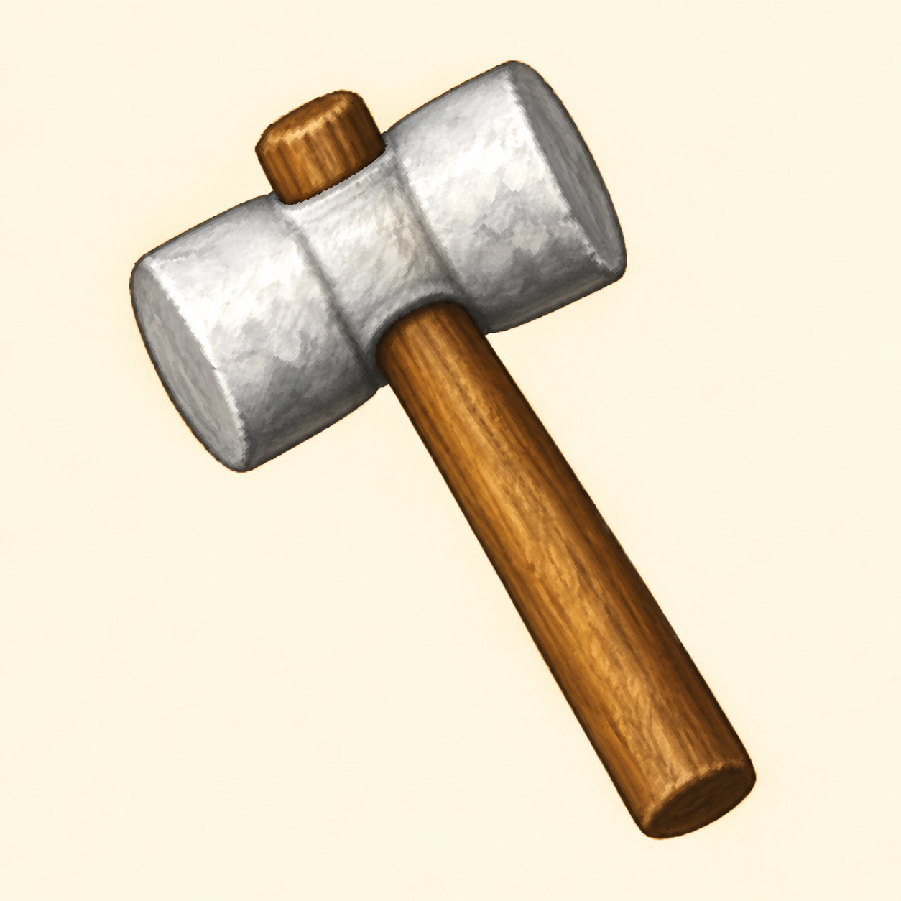
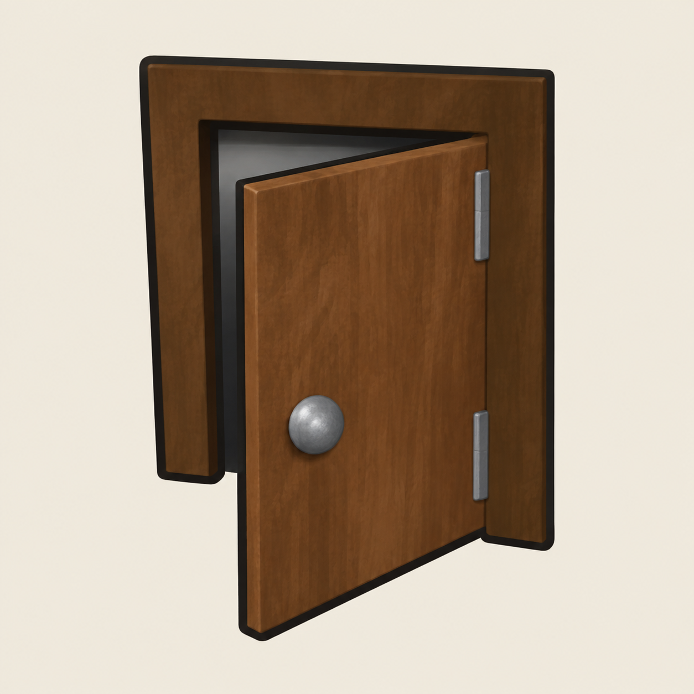
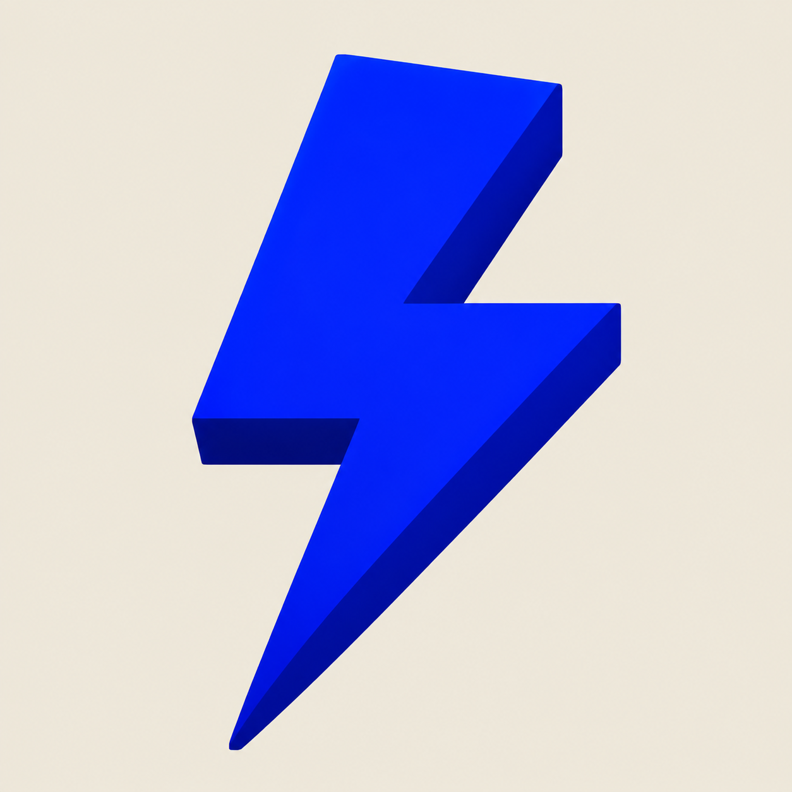
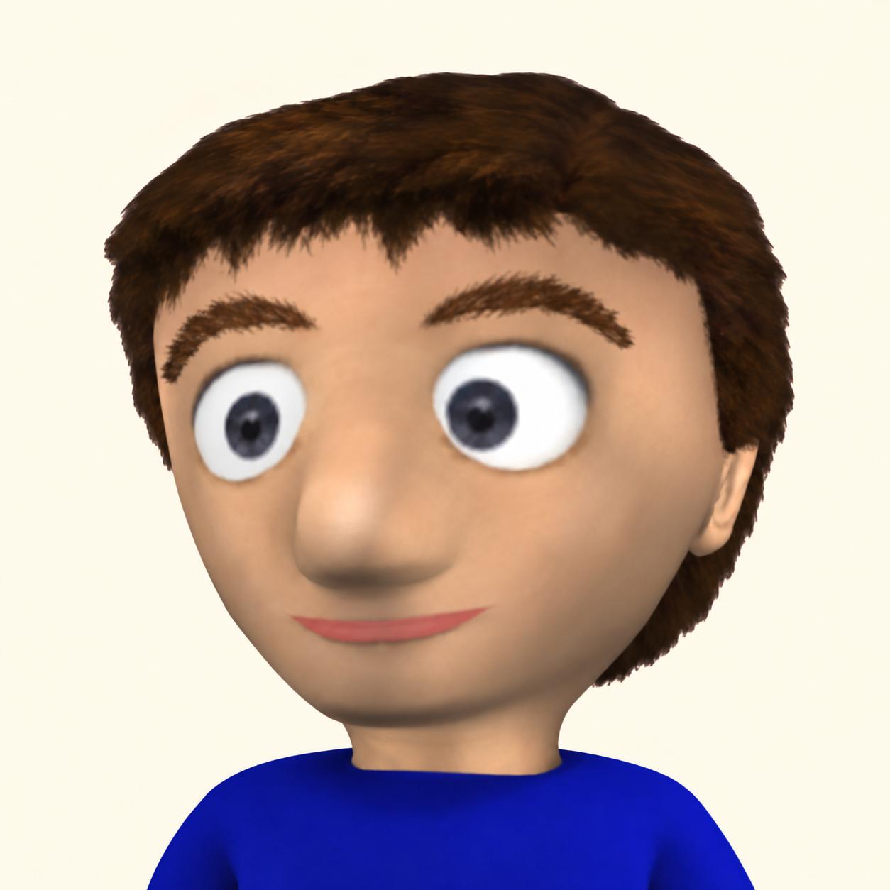
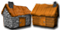
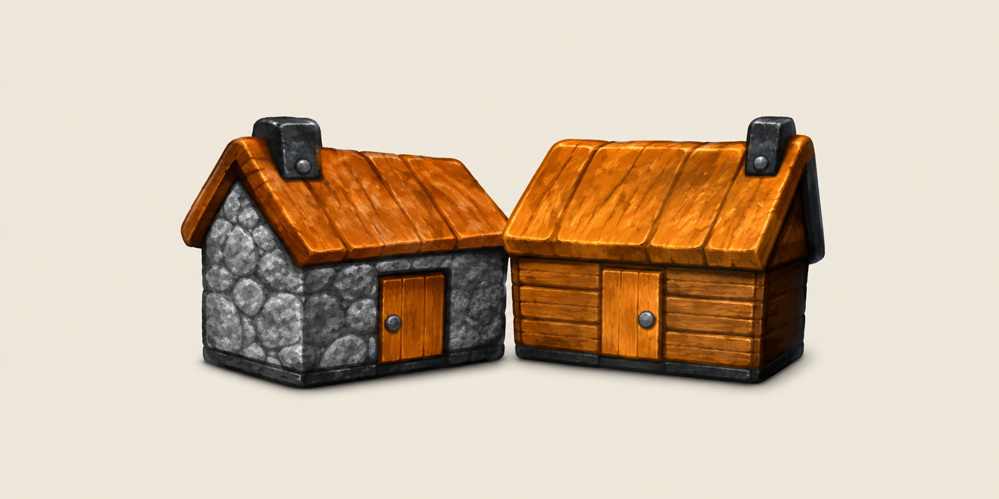
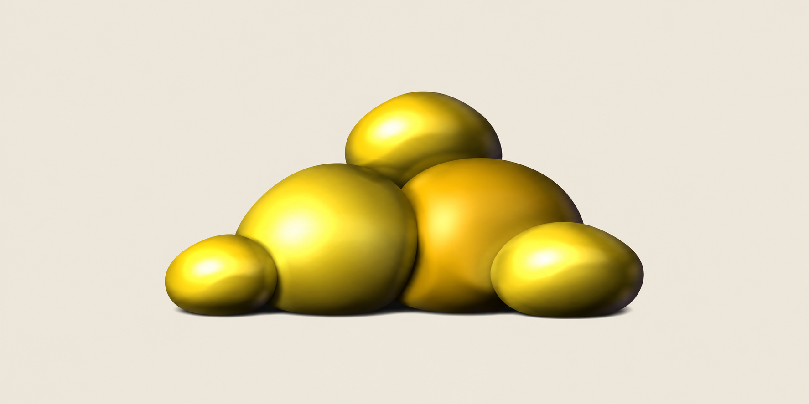

HUD-01
Build command symbolBuild tool


Approved in round one
All nine HUD icons are approved and integrated into the game. Compare the original art with the approved super-resolution previews. The previews retain their generated backdrop; the game assets have transparent backgrounds and preserve the original HUD layout.


Approved in round one
Approved after revision: Flatter gold star with a thin offset shadow. Earlier preview


Approved after revision: A proper two-faced mallet with a centered wooden shaft. Earlier preview Game mallet reference
Approved after revision: The approved blue bolt, recolored red without changing its shape. Earlier preview

Approved in round one

Approved in round one

Approved after revision: Rebuilt using the game's portrait of the same Clonk as reference. Earlier preview Game Clonk portrait reference


Approved in round one

Approved in round one
These are standalone pictorial symbols used by the game. Flag and Crew also carry owner colors, which need a separate treatment. Liquid is an animation texture. The multi-cell Menu, Options, Rank, Gamepad, and scenario-icon sheets will be reviewed in their own batches.
Click an image to inspect it at its full source size. The approval record is in history/review-round-2.json.